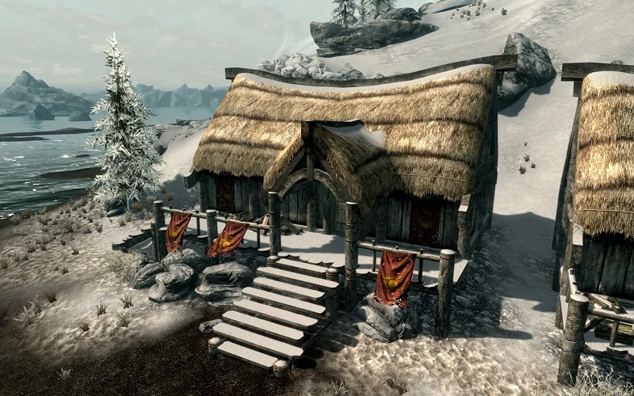
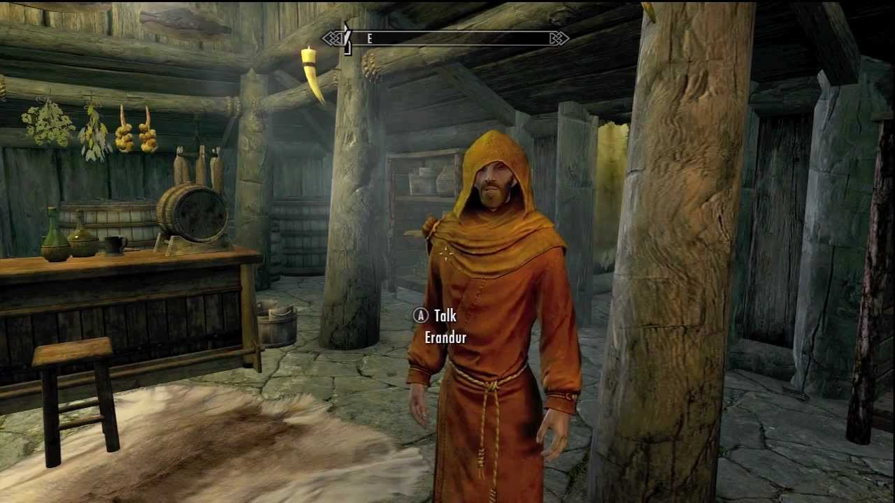

Dawnstar Tribune
Riding the Waves

Captains reveal the adventures to be had sailing the high seas north of Skyrim
Help Wanted
- Captain of the Wayfinder Seeks Void Salts to replenish their stocks
- Jarl Skald seeks the death of a Giant
Mythic Dawn Museum To Open
A new Museum has entered town. One with a surprising focus, the Mythic Dawn Cult
Those with a mind for History may remember the Mythic Dawn Cult to be the cult that initiated the Oblivion Crisis 200 years prior, where the gates to the plane of Oblivion opened up across tamriel, ushering in an invasion closing in the invasion of the White Gold Tower and the death of the Septim Dynasty
When asked what brought him to opening up the Museum, Silus Vesuius revealed that his ancestors were in fact part of the Cult. "I have a collection of artifacts from the group that toppled an Empire, their importance to history cannot be forgotten!"
collection includes items such as pieces of the Mysterium Xarxes, and a complete set of the Mythic Dawn Commentaries
Sleepless In Dawnstar
Have you been experiencing Nightmares instead of restful dreams?
You may not be alone! It seems the entire town has a plague of Nightmares and there is no end in sight. Priests of Mara have arrived in the town to investigate however they have repeatedly assured everyone that there is nothing to worry about and this is simply a strange oddity with nothing to fear.
"We are doing what we can to end these nightmares. In the meantime all we ask is that you remain strong and put your trust in Lady Mara